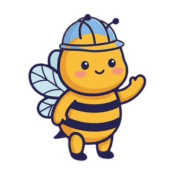

拼字蜂巢 · 隱私權政策
孩子的學習紀錄，只留在你的裝置和你自己的 iCloud
拼字蜂巢（英文名稱 BeeHive Spell，以下稱「本 App」）是給國小孩子練習英文單字拼寫的 App。我們的設計原則很簡單：不蒐集任何個人資料。這頁老實說明本 App 實際上怎麼處理資料（大多是「不處理」）。
01我們不蒐集個人資料
- 本 App 不需要帳號，也沒有登入。
- 本 App 沒有我們自己的伺服器，不會把資料上傳給我們。唯一會離開裝置的是 iCloud 同步：資料存到家長自己的 iCloud（見第 03 條），我們看不到。
- 我們不蒐集、不儲存、不傳送孩子或家長的姓名、生日、電子郵件、電話、位置、照片、聲音、裝置識別碼或使用紀錄。
- 本 App 沒有廣告，也沒有使用任何第三方 SDK（包括分析、廣告、追蹤工具）。
02只存在你裝置上的資料
為了讓 App 正常運作，下列資料只存在你的 iPhone 或 iPad 上，我們拿不到：
- 小朋友的暱稱（最多 4 位，由家長在 App 內建立）
- 學習進度：玩過的格子、星星、稱號、複習籃、蜂蜜數量
- 設定：介面語言、每週目標、音效與特效、地圖樣式
- 家長加入的單字與「我的道路」
刪除本 App，這些資料會一起從裝置上刪除。
03iCloud 同步（1.1 版起）
同一個家庭有 iPhone 和 iPad 時，本 App 可以用 Apple 的 iCloud 讓進度在這些裝置之間同步。
- 存在哪裡：存在裝置上登入的那個 Apple 帳號的 iCloud 私有資料庫裡（Apple 的 CloudKit 服務），算在你自己的 iCloud 空間。這是 Apple 的服務，不是我們的伺服器；我們看不到、也拿不到這些資料，也不會分享給任何第三方。
- 同步什麼：上面第 02 條列的資料：小朋友的暱稱與頭像、學習進度（星星、學過的字、作答紀錄、蜂蜜、連續天數、蜂巢挑戰找到的字）、每週目標等少數設定，以及家長加入的單字與「我的道路」。為了把各台裝置的蜂蜜加總，每台裝置會有一個本 App 自己產生的隨機編號，它不是裝置識別碼，也不會送給我們。
- 不同步什麼：照片（本來就不保存）、購買資料（由 Apple 處理）、你的 Apple 帳號資訊。
- 怎麼關掉：家長區（要先通過家長驗證）> iCloud 同步 > 關掉「在這台裝置同步」。關掉後這台裝置不再上傳下載，本機資料不受影響。也可以在 iOS「設定」> Apple 帳號 > iCloud 關掉本 App 使用 iCloud。沒有登入 iCloud 時，本 App 照常使用，進度只存在這台裝置。
- 怎麼刪除 iCloud 裡的資料：在家長區刪除某位小朋友，會一起刪掉他在 iCloud 的資料；要刪除全部，請到 iOS「設定」> Apple 帳號 > iCloud > 管理帳號儲存空間，找到拼字蜂巢刪除資料。只刪除 App 不會刪掉 iCloud 裡的資料。
04字表拍照：相機與照片
- 只有在大人通過家長驗證、選擇「拍下學校的單字表」時，本 App 才會使用相機。
- 照片用 Apple 內建的文字辨識功能，只在這台裝置上讀出單字。照片不會被保存，也不會上傳。
- 選擇「從相簿選照片」時，使用的是 iOS 系統的照片選擇器，本 App 只能讀到你選的照片，一樣只在裝置上處理。
- 你可以隨時在 iOS「設定」>「隱私權與安全性」>「相機」關閉本 App 的相機權限；關閉後仍可以從相簿選照片或直接打字加入單字。
05家長驗證
購買、還原購買、設定、新增或刪除小朋友、加入單字、分享與匯入道路，以及任何外部連結，都要先回答一題數學題（家長驗證），由大人操作。
06分享道路檔案
「分享道路」會產生一個 .json 檔案，內容只有字表（單字）與道路名稱，不含學習紀錄、星星、暱稱或照片。檔案由你自己透過 iOS 分享功能（例如 AirDrop、訊息）傳給別人，不會經過我們。
07購買
App 內購買由 Apple 處理。我們收不到你的付款資料或 Apple 帳號資訊；本 App 只會向 Apple 確認是否已購買，用來解鎖內容。退款與購買紀錄請洽 Apple。
08Apple 提供的資料
如果你在 iOS 設定裡同意「與 App 開發者分享」，Apple 可能會提供我們彙整後的當機報告與使用統計。這些資料由 Apple 依其隱私權政策處理，我們無法用來辨識你或孩子。
09兒童隱私
本 App 是給兒童使用的。因為我們不蒐集任何個人資料，所以不會要求孩子提供個人資料。家長區裡可能出現 Apple 的「為這個 App 評分」視窗，只會在家長通過驗證後的家長區出現，孩子玩的畫面不會出現。
10資料刪除
我們沒有保存你的任何資料，所以沒有我們伺服器上的資料可以刪除。要刪除裝置上的資料，請在家長區刪除小朋友，或直接刪除本 App。有開 iCloud 同步時，iCloud 裡的資料請照第 03 條的方式刪除。
11政策變更
如果本 App 的功能改變而影響隱私，我們會先更新這份政策與最後更新日期，並在 App 的更新說明中提醒。我們不會偷偷改內容。
12聯絡我們
有任何問題，請寫信到：hounienlin@gmail.com。我們會親自回覆。